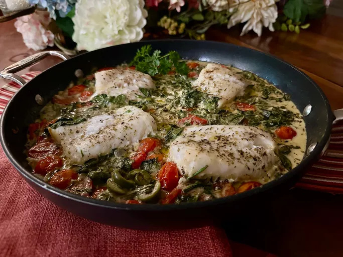

Mediterranean baked fish

This Mediterranean baked fish brings more fish to your diet in a satisfying, tasty way,
with fish filets baked in a wonderful Mediterranean combination of tomatoes, olives, spinach, wine, and cream.
Prepare some fettuccine, rice, or orzo while the fish bakes to serve alongside.
- 3 tablespoons olive oil, divided
- 1/2 cup chopped onion
- 4 cloves garlic, minced
- 1 1/2 cups cherry tomatoes, halved
- 1/2 cup dry white wine
- salt and freshly ground black pepper to taste
- 1 1/2 teaspoons dried Italian herb seasoning, divided
- 1/2 teaspoon crushed red pepper flakes, or to taste
- 1/4 cup pitted and sliced Castelvetrano olives
- 1 cup chopped fresh spinach
- 1/2 cup heavy cream
- 1 1/2 pounds fish fillets, about 1/2-inch thick, patted dry (see note)
- cooked rice or pasta (optional)
- fresh parsley for garnish (optional)
- Preheat the oven to 400 degrees F (200 degrees C).
- Heat 2 tablespoons olive oil in an oven-safe nonstick skillet over medium heat. When oil shimmers, add onions and cook,
stirring frequently, until onions are translucent, 3 to 4 minutes. Stir in garlic, and cook, stirring, about 30 seconds.
- Add cherry tomatoes and wine, and season with salt and pepper. Add 1 teaspoon Italian seasoning and red pepper flakes.
to combine, and cook about 1 minute. Remove from heat and stir in sliced olives, chopped spinach, and cream.
- Nestle fillets into vegetable mixture, sprinkle each fillet with salt and pepper, and drizzle remaining olive oil over the entire dish.
Brush the olive oil to cover the surface of each fillet. Sprinkle with remaining 1/2 teaspoon Italian seasoning.
- Bake in the preheated oven until fish flakes easily with a fork, 20 to 25 minutes.
An instant-read thermometer inserted near the center should read 145 degrees F (63 degrees C).
- Serve with hot, cooked pasta or rice, and garnish with fresh parsley.